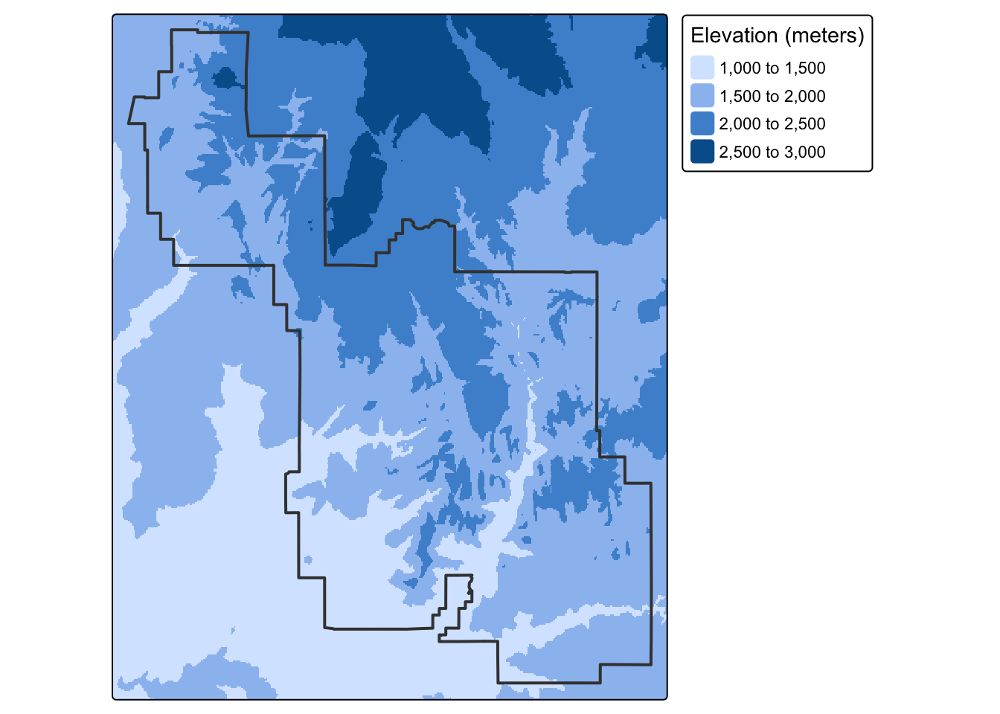
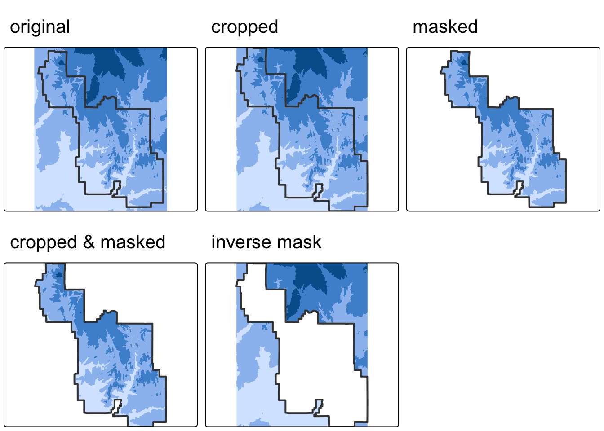
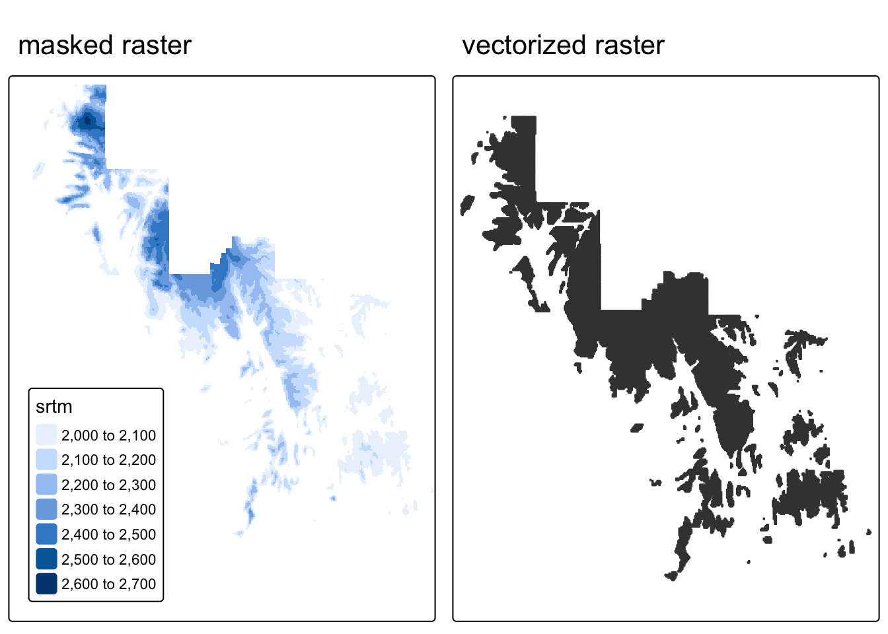

Source Materials
The following materials are modified from Chapter 6 of Geocomputation with R by Robin Lovelace.
In this lab we’ll explore operations that rely on interactions between vector and raster datasets, including how to convert raster data into vector data.
1. Set up
First, we’ll load all relevant packages.
library(sf) # vector handling
library(terra) # raster handling
library(tidyverse)
library(tmap) # map making
library(spData) # spatial data
library(spDataLarge) # spatial data
library(viridisLite)Today we’re heading back to Zion National Park in Utah to explore the interactions between vector and raster data.

We’ll load the following data from the {spDataLarge} package:
srtm.tif: remotely sensed elevation estimates (raster data)zion.gpkg: boundary of Zion National Park (vector data)
# load raster dataset
elevation <- rast(system.file("raster/srtm.tif", package = "spDataLarge"))
# load vector dataset
boundary <- read_sf(system.file("vector/zion.gpkg", package = "spDataLarge"))
Remember to check the CRS!
Whenever we work with multiple spatial datasets, we need check that the coordinate reference systems match. If they don’t, we need to transform one to match the other.
# check if coordinate reference systems match
if(crs(elevation) == crs(boundary)) {
print("Coordinate reference systems match")
} else{
warning("Updating coordinate reference systems to match")
# transform data to match
boundary <- st_transform(boundary, st_crs(elevation))
}Warning: Updating coordinate reference systems to matchCode
tm_shape(elevation) +
tm_raster(col.legend = tm_legend(title = "Elevation (meters)")) +
tm_shape(boundary) +
tm_borders(lwd = 2) 
2. Raster cropping
Many geographic data projects involve integrating data from many different sources, such as remote sensing images (rasters) and administrative boundaries (vectors). Often the extent of input raster datasets is larger than the area of interest. In this case, raster cropping and masking are useful for unifying the spatial extent of input data. Both operations reduce object memory use and associated computational resources for subsequent analysis steps and may be a necessary preprocessing step when creating attractive maps involving raster data.
First, let’s crop the extent of the elevation raster to match the extent of Zion’s boundaries. Through this process, we eliminate grid cells that fall outside the extent of the park and reduce the size of the raster. To do so, we use the terra::crop() function.
# crop raster to extent of vector object
elevation_cropped <- crop(elevation, boundary)Beyond matching the extent, we can also set the values of raster cells outside of the boundaries or the park to NA using terra::mask().
# mask raster based on vector object
# (cells outside of vector are converted to NA)
elevation_masked <- mask(elevation, boundary)Often, we will want to combine both cropping and masking to reduce the size of the raster as much as possible.
# crop and mask raster
elevation_final <- mask(elevation_cropped, boundary)In some cases, we may want to mask the raster cells inside of the boundaries (i.e. assign cells inside the park to NA). We can do so with terra::mask() by setting the argument inverse = TRUE.
# mask raster based on vector object
# (cells inside of vector are converted to NA)
elevation_inv_masked <- mask(elevation_cropped, boundary, inverse = TRUE)Code
map1 <- tm_shape(elevation) +
tm_raster(col.legend = tm_legend_hide()) +
tm_shape(boundary) +
tm_borders(lwd = 2) +
tm_title(text = "original")
map2 <- tm_shape(elevation_cropped) +
tm_raster(col.legend = tm_legend_hide()) +
tm_shape(boundary) +
tm_borders(lwd = 2) +
tm_title(text = "cropped")
map3 <- tm_shape(elevation_masked) +
tm_raster(col.legend = tm_legend_hide()) +
tm_shape(boundary) +
tm_borders(lwd = 2) +
tm_title(text = "masked")
map4 <- tm_shape(elevation_final) +
tm_raster(col.legend = tm_legend_hide()) +
tm_shape(boundary) +
tm_borders(lwd = 2) +
tm_title(text = "cropped & masked")
map5 <- tm_shape(elevation_inv_masked) +
tm_raster(col.legend = tm_legend_hide()) +
tm_shape(boundary) +
tm_borders(lwd = 2) +
tm_title(text = "inverse mask")
tmap_arrange(map1, map2, map3, map4, map5, nrow = 2)
3. Raster vectorization
There are several ways to convert raster data into vector. The most common, and straightforward, is converting raster grid cells into polygons. For more examples, check out Geocomputation with R.
We could simply convert all grid cells into polygons, but it may be more helpful to create polygons based on some condition
Tip for HW3
The following example is relevant to homework assignment 3!
In this example, we’ll select grid cells higher than 2000 meters by masking the elevation raster. We’ll then convert these grid cells into polygons using the terra::as.polygons() function and turn this into a sf object.
elevation_mask <- elevation_final
elevation_mask[elevation_mask < 2000] <- NA
elevation_mask_poly <- as.polygons(elevation_mask) %>%
st_as_sf()Code
map1 <- tm_shape(elevation_mask) +
tm_raster() +
tm_title( text = "masked raster")+
tm_layout(legend.position = c("left", "bottom"))
map2 <- tm_shape(elevation_mask_poly) +
tm_polygons() +
tm_title(text = "vectorized raster")
tmap_arrange(map1, map2, nrow = 1)
Rayshader
Rayshader is an R package that creates beautiful 2D and 3D maps from elevation data. It uses various shading techniques to make terrain look realistic, including:
- Lambertian shading - simulates direct sunlight on slopes
- Ambient occlusion - adds shadows in valleys and crevices
- Hypsometric tinting - colors based on elevation (greens for low, browns/whites for high)
- Texture shading - emphasizes ridges and drainage patterns
- Sphere shading - adds natural ambient lighting effects
These techniques can be layered together to create stunning, professional-quality terrain maps in just a few lines of code.
Road trip! We are headed northeast to Bryce Canyon National Park!We will use the rayshader package, as well as osmdatato visualize the hoodoos of Bryce Canyon in 3D.
#install.packages("rayshader")
#install.packages("magick")
#install.packages("osmdata")
library(rayshader)
library(magick)
library(osmdata)
library(raster)We’ll use elevation data from Bryce Canyon in Utah (courtesy of Tom Patterson via shadedrelief.com). Download the Bryce Canyon tif from this link. Store this Bryce_Canyon.tif file in your data folder, and be sure to add it to your .gitignore!!
bryce = raster("data/Bryce_Canyon.tif")
bryce_mat = raster_to_matrix(bryce)
bryce_small = resize_matrix(bryce_mat,0.25)Building Basemaps with Rayshader
bryce_small %>%
height_shade() %>%
plot_map() bryce_small %>%
height_shade() %>%
add_overlay(sphere_shade(bryce_small, texture = "desert",
zscale=4, colorintensity = 5), alphalayer=0.5) %>%
add_shadow(lamb_shade(bryce_small,zscale=6), 0) %>%
add_shadow(ambient_shade(bryce_small), 0) %>%
add_shadow(texture_shade(bryce_small,detail=8/10,contrast=9,brightness = 11), 0.1) %>%
plot_map()utm_bbox <- c(xmin = 396367.4, xmax = 397975.2,
ymin = 4163747.9, ymax = 4165291.0)extent_zoomed = extent(utm_bbox[1], utm_bbox[2], utm_bbox[3], utm_bbox[4])
bryce_zoom = crop(bryce, extent_zoomed)
bryce_zoom_mat = raster_to_matrix(bryce_zoom)
base_map = bryce_zoom_mat %>%
height_shade() %>%
add_overlay(sphere_shade(bryce_zoom_mat, texture = "desert", colorintensity = 5), alphalayer=0.5) %>%
add_shadow(lamb_shade(bryce_zoom_mat), 0) %>%
add_shadow(ambient_shade(bryce_zoom_mat),0) %>%
add_shadow(texture_shade(bryce_zoom_mat,detail=8/10,contrast=9,brightness = 11), 0.1)
plot_map(base_map)Using OSM to add features to our base map
osm_bbox = c(-112.174228, 37.614998, -112.156230,37.629084)
bryce_highway = opq(osm_bbox) %>%
add_osm_feature("highway") %>%
osmdata_sf()
bryce_highwaybryce_lines = st_transform(bryce_highway$osm_lines, crs=crs(bryce))
tm_shape(bryce_lines) +
tm_lines(col = "black") +
tm_title(text = "Open Street Map `highway` attribute in Bryce Canyon National Park")bryce_trails = bryce_lines %>%
filter(highway %in% c("path","bridleway"))
bryce_footpaths = bryce_lines %>%
filter(highway %in% c("footway"))
bryce_roads = bryce_lines %>%
filter(highway %in% c("unclassified", "secondary", "tertiary", "residential", "service"))trails_layer = generate_line_overlay(bryce_footpaths,extent = extent_zoomed,
linewidth = 10, color="black",
heightmap = bryce_zoom_mat) %>%
add_overlay(generate_line_overlay(bryce_footpaths,extent = extent_zoomed,
linewidth = 6, color="white",
heightmap = bryce_zoom_mat)) %>%
add_overlay(generate_line_overlay(bryce_trails,extent = extent_zoomed,
linewidth = 3, color="black", lty=3, offset = c(2,-2),
heightmap = bryce_zoom_mat)) %>%
add_overlay(generate_line_overlay(bryce_trails,extent = extent_zoomed,
linewidth = 3, color="white", lty=3,
heightmap = bryce_zoom_mat)) %>%
add_overlay(generate_line_overlay(bryce_roads,extent = extent_zoomed,
linewidth = 8, color="grey30",
heightmap = bryce_zoom_mat)) bryce_water_lines = opq(osm_bbox) %>%
add_osm_feature("waterway") %>%
osmdata_sf()
tm_shape(bryce_water_lines$osm_lines) +
tm_lines(col = "blue") +
tm_title(text = "Open Street Map `waterway` attribute in Bryce Canyon National Park")bryce_streams = st_transform(bryce_water_lines$osm_lines,crs=crs(bryce))
stream_layer = generate_line_overlay(bryce_streams,extent = extent_zoomed,
linewidth = 4, color="skyblue2",
heightmap = bryce_zoom_mat)bryce_tourism = opq(osm_bbox) %>%
add_osm_feature("tourism") %>%
osmdata_sf()
bryce_tourism_points = st_transform(bryce_tourism$osm_points,crs=crs(bryce))
bryce_attractions = bryce_tourism_points %>%
filter(tourism == "attraction")
attraction_layer = generate_label_overlay(bryce_attractions, extent = extent_zoomed,
text_size = 2, point_size = 2, color = "white",
halo_color = "black",
halo_expand = 10,
halo_blur = 20,
halo_alpha = 0.8,
heightmap = bryce_zoom_mat,
data_label_column = "name")Create National Park Map
base_map %>%
add_overlay(stream_layer, alphalayer = 0.8) %>%
add_overlay(trails_layer) %>%
add_overlay(attraction_layer) %>%
plot_map(title_text = "Bryce Canyon National Park, Utah",
title_bar_color = "lightgray", title_bar_alpha = 1)Creating a 3D plot of Bryce Canyon’s streams and trails
base_map %>%
add_overlay(stream_layer, alphalayer = 0.8) %>%
add_overlay(trails_layer) %>%
plot_3d(bryce_zoom_mat, windowsize=c(1200,800))
render_camera(theta=240, phi=30, zoom=0.3, fov=60)
render_snapshot()